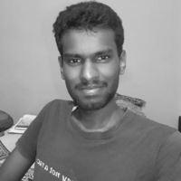

Hi, I'm Devanath.
Welcome to my personal webpage!
I am currently working as a Scientific Assistant (Library) at the International Centre for Theoretical Sciences (ICTS-TIFR), Bengaluru. Beyond this regular job, my professional interests extend to Quantitative Science Studies, where I study research performance and impact.

Currently
Studying how Indian-funded research has influenced policymaking.
My work uses quantitative methods (bibliometrics, altmetrics, scientometrics) to assess research performance and impact.
About
I studied Sociology for my Bachelor's, then ended up in Library Science for my Master's — not by choice, but by chance😄. That chance turned out very well for me: I left with a gold medal, and a career I never saw coming. I currently work as a Scientific Assistant (Library) at the International Centre for Theoretical Sciences (ICTS-TIFR), Bangalore, where I manage the institute's library. Before this, I spent close to three years each at Dayananda Sagar University (DSU) and NITTE in similar roles. Somewhere along the way, a growing interest in technology reshaped my work entirely: I'm drawn to both technology and sustainable practices in libraries.
Outside of work, you'll usually find me running or playing badminton. If you are a Sportsperson, you can connect with me on Strava. I'm also fascinated by geopolitics and enjoy following global affairs and international developments. Reading has been a constant habit over the years. While I began with self-help books, my interests have broadened to include anything that sparks my curiosity. This is my reading list. When I'm not on any productive task, there's a good chance I watch a TV series, documentary or movie😜. I like watching real-event based entertainment. If you're looking for recommendations, check out some of my favorites.
Doctoral research
Alongside all this, I'm also enrolled in a part-time Ph.D. programme at Tumkur University, working on a thesis on research productivity and the impact of Indian-funded research — a quantitative look at how research performance is measured and what that measurement actually tells us. Most theses end up archived in a university repository where almost no one looks twice — I'm hoping mine does a little more than that😜.
Education & employment
Scientific Assistant (Library)
International Centre for Theoretical Sciences (ICTS-TIFR), Bengaluru
Librarian
Dr. N.S.A.M. First Grade College, Bengaluru
Assistant Librarian
Dayananda Sagar University, Bengaluru
MLISc, Library and Information Science
Bangalore University — Gold Medal
Professional Activities
Attended Librarian Development Program
Goa Institute of Management
Attended workshop on Data Carpentry and AI/ML Tools for Libraries
IIM Calcutta
Annual Refresher Programme in Teaching: Emerging Trends & Technologies in Library & Information Services
IIT Delhi
UGC-NET
UGC/NTA
Recognition
- 2025 Best Young Researcher Award — Dept. of Library and Information Science, Bangalore University
- 2024 Best Paper Award — Jain University
- 2016 Gold Medal — MLISc, Bangalore University